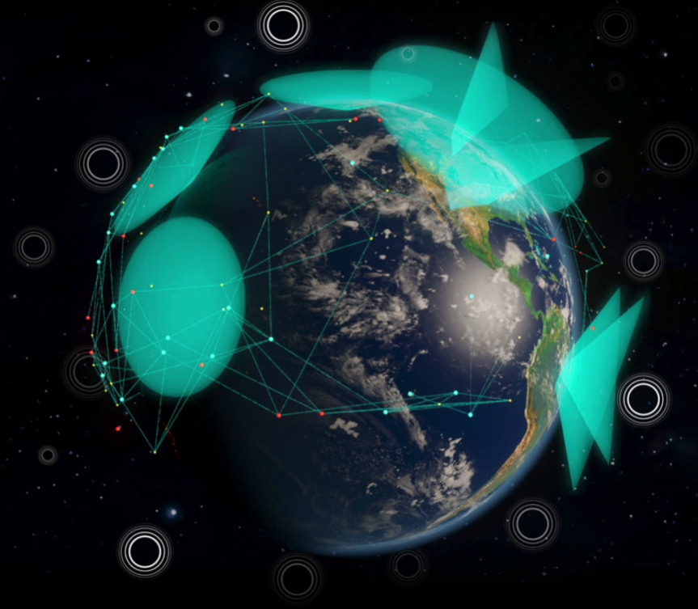

DEMOCRATIZANDO
A SEGURANÇA
ESPACIAL
Democratizando a segurança espacial
com código aberto para gestão
de tráfego e desvio de detritos orbitais
PRECISÃO PARA QUALQUER MISSÃO
Visibilidade Orbital em Tempo Real
A SEP rastreia milhares de detritos espaciais garantindo a segurança de satélites críticos
Alertas de Colisão Imediata
Sensores detectam aproximações perigosas e notificam os operadores em milissegundos
Relatórios de Sustentabilidade
Gere documentos automáticos sobre o uso da órbita garantindo conformidade com as normas internacionais
